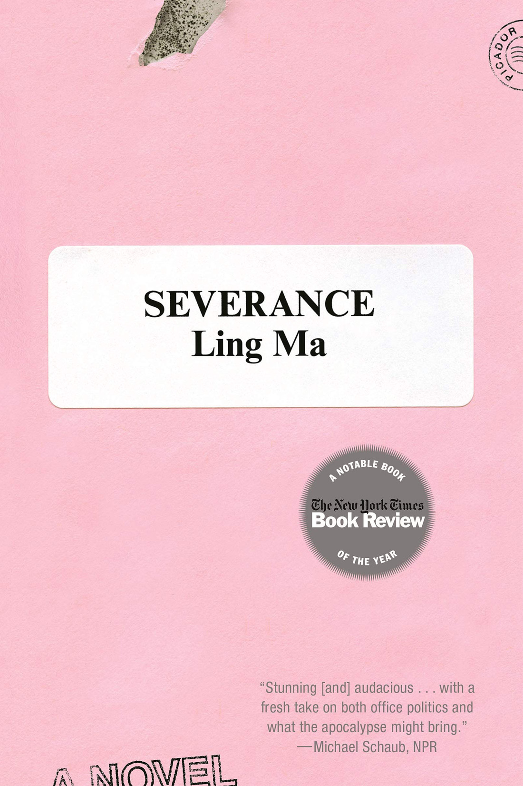
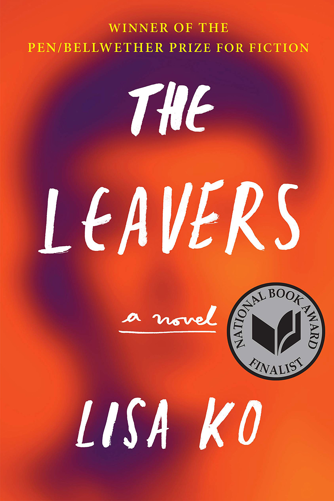

Book Reviews
In 'Severance,' The World Ends Not With A Bang, But A Memo
Michael Schaub | npr.org
 If you've spent much time reading personal essays on the Internet, then (a) you're a masochist, and (b) you've probably noticed a subgenre of the form that involves the author explaining why they left New York. The pieces are usually bittersweet and elegiac; seldom, if ever, do they say "My company transferred me to the Denve office" or "I just got tired of paying $20 for a hamburger."
In a way, Ling Ma's shocking and ferocious novel, Severance, is a play on the "Why I left New York" theme, but it's one you'll actually want to read. The novel's protagonist, Candace Chen, departs the city she's called home for years not because of a tough job market or skyrocketing rent, but because the world as we know it is coming to an end. It's a fierce debut from a writer with seemingly boundless imagination.
Candace's life in New York might not be what she dreamed of, but it's not all that bad. She has a respectable job at a publishing production firm, where she outsources printing jobs to facilities in China. She and her boyfriend pass the time watching movies in his basement apartment. As a hobby, she maintains NY Ghost, a blog featuring her photographs of life in the city. But then things start to get complicated. A mysterious disease called Shen Fever, a fungal infection that originated in China, starts to move through the country, turning its victims into, essentially, zombies. The deaht count rises so quickly that the news media, fearing a panic, stops reporting it.
Soon, Candace is --as near as she can tell -- one of the only living people in the nation. "After the End came the Beginning," she explains. "And in the Beginning, there were eight of us, then nine -- that was me -- a number that would only decrease. We found one another after fleeing New York for the safer pastures of the countryside." Their ragtag group is led by Bob, a humorless IT specialist who promies to lead them to a safe place called "the Facility" in a Chicago suburb.
Read the full review at npr.org.
The Leavers Is a Wrenching Tale of Parenthood
Amy Weiss-Meyer | theatlantic.com
 Lisa Ko's novel, about the diseappearance of an undocumented mother, places an imperfect victim within a cruel system.
"Our immigration system is broken," Barack Obama said in November 2014. "And everybody knows it." His administration would henceforth, he announced, focus its enforcement efforts on "felons, not families. Criminals, not children. Gang members, not a mom who's working hard to provide for her kids." When the Trump administration triggered a series of raids to round up undocumented immigrants two years and some months later, the "not families" promise was gone.
For topicality, Lisa Ko's novel The Leavers, is about an undocumented mother who suddenly disappears and the young American-born son she leaves behind, could hardly be better timed. The political resonance of The Leavers is no coincidence; Ko got the idea for her affecting debut from a 2009 New York Times article about an undocumented immigrant from Fuzhou, China, who spent a year and a half in detention (much of it solitary) after being arrested at a Greyhound station in Florida on her way to a new job. That woman's story inspired the character of Polly Guo, the mother in Ko's book; her son, also mentioned in the article, yielded Deming, Polly's 11-year-old.
These days, it's difficult to imagine a real-life Deming who is not, by age 11, excruciatingly aware of the perils of having his sole parent be a poor immigrant of ambiguous legal status. But Ko has made the notable choice to render Deming almost totally ignorant of those perils. When Polly fails to come home from work one day, he's told she's "visiting friends," and though he knows "she had no friends to visit," the possibility of her absence being immigration-related never occurs to him. He worries vaguely that "she's in danger," but envisions a scenario in which "she'd been the victim of a crime, like on CSI, and maybe she was dead" rather than wondering if perhaps she's being punished for a crime instead. Knowing Polly had fantasizd about taking a job in Florida, Deming concludes that "she'd left for Florida and left him, too."
Readers are, like Deming, proelled forward in search of Polly, the cause of whose vanishing remains a mystery (unless you've read the back cover). We pick up the clues along the way about her turbulent past, her treacherous emigration from Fuzhou, her hopes for the future, and her hasty and unexplained departure from the life in New York she'd worked so tirelessly to build. Intertwining two familiar narratives--the struggling immigrant saga and the lost-child tale--Ko hones in on the latter. Deming's perspective is in the foreground as he weathers the trauma of relocating to a small upstate town and rebuilding his life as "Daniel," the foster son of a well-meaning, if clueless, white couple.
Read the full review at theatlantic.com.
Reviews from NPR
1. A delicious Gothic romance strikes just the right balance of heart and horror
2. This novel about Haiti's 2010 earthquake shows us: People persist
3. 'Invisible Child' tells the story of childhood homelessness in America
Reviews from The New Yorker
1. Sally Rooney gets outside of people's heads
2. Memories of a vanishing China
3. Where loneliness comes from